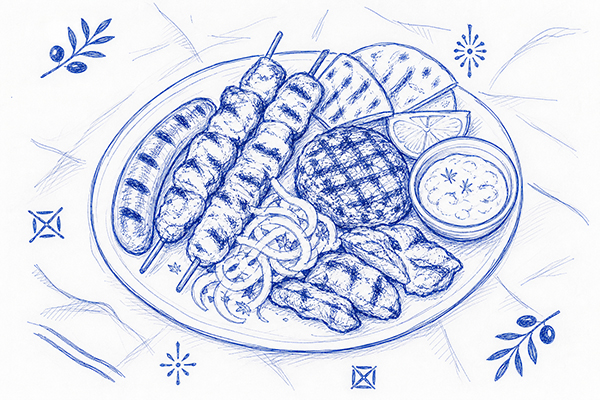
MezedopolioMezedopolio Mpotas
A lively meze house — grilled meats, sausages and dips to share, washed down with ouzo or tsipouro.
Open in Google MapsMake the most of it
You've come all this way — stay a few extra days! Aitoliko and the surrounding coast are full of long lunches, hidden beaches and golden-hour walks. Here are our favourites to get you started.

MezedopolioA lively meze house — grilled meats, sausages and dips to share, washed down with ouzo or tsipouro.
Open in Google Maps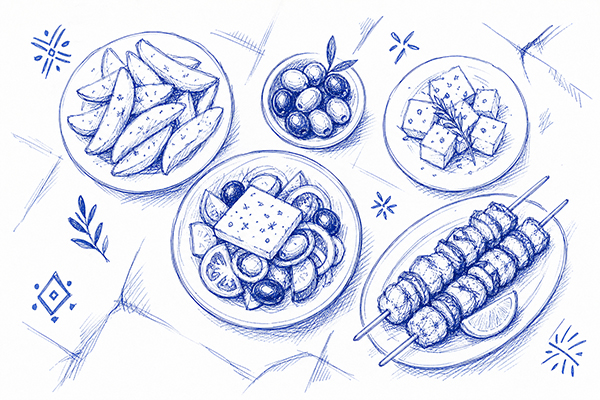
KoutoukiA traditional koutouki for small plates and mezedes — Greek salad, feta, olives and grilled bites.
Open in Google Maps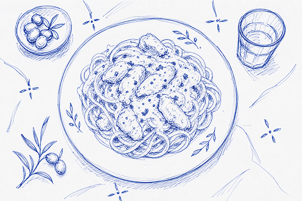
TavernaA homely taverna serving classic Greek cooked dishes and hearty pasta in generous portions.
Open in Google Maps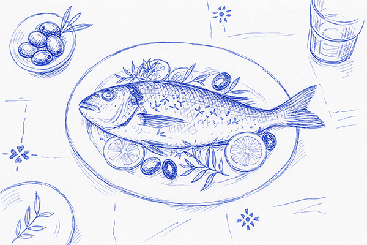
Fish tavernaA waterside fish taverna — grilled catch of the day, fresh seafood and a chilled carafe of white.
Open in Google Maps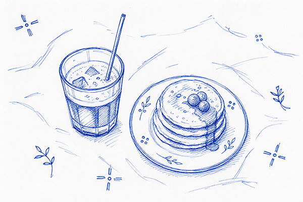
CaféA laid-back café for freddo coffee, brunch and sweet pancakes — a perfect morning or afternoon stop.
Open in Google Maps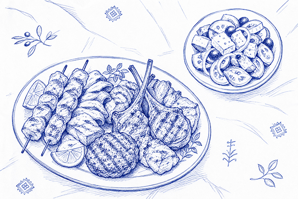
Grill tavernaChargrilled meats, lamb chops and Greek salad — with a balcony view to match the name.
Open in Google Maps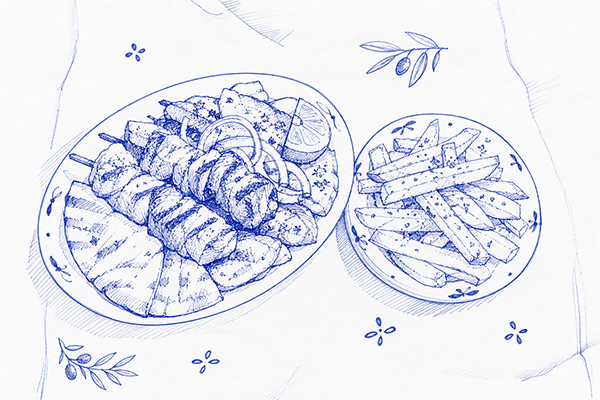
Grill houseA classic Greek grill house — skewers, souvlaki and grilled meats served with crispy chips.
Open in Google Maps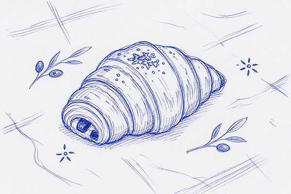
BakeryThe neighbourhood bakery — fresh bread, croissants, savoury pies and pastries for breakfast on the go.
Open in Google Maps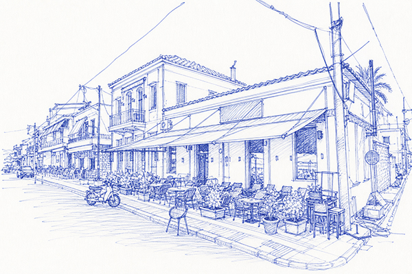
Coffee & drinksA series of cafes one next to the other that turn into relaxed bars at night. They all include brunch and food options if you get peckish.
We'll be in one of these, come get a drink!
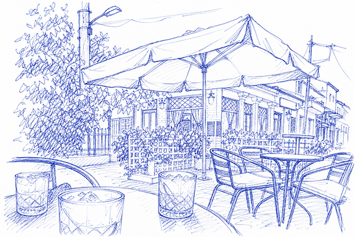
Evening drinksThe main town square of Aitoliko, with plenty of food and drink options for day and night.
For the breezy nights
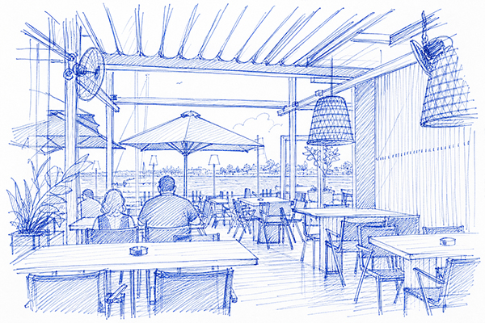
All-day drinksPlenty of food and drink options right next to the water in Mesolonghi. Alatiera is the most popular with the locals and worth checking out.
Sunset views and good vibes
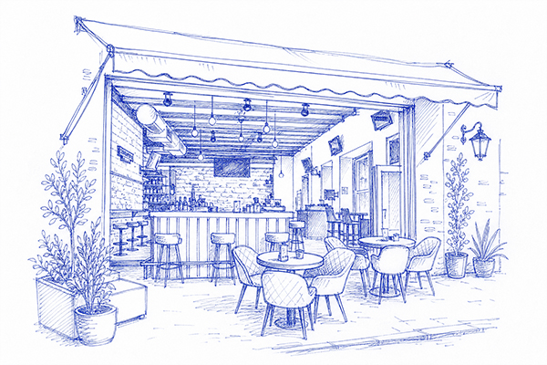
All-day & late-night barA lovely coffee and bar spot in the middle of town. If you fancy a quick coffee in the intimate streets of Mesologgi or a night out, this is the spot.
Say hello to cousin Panos from us!
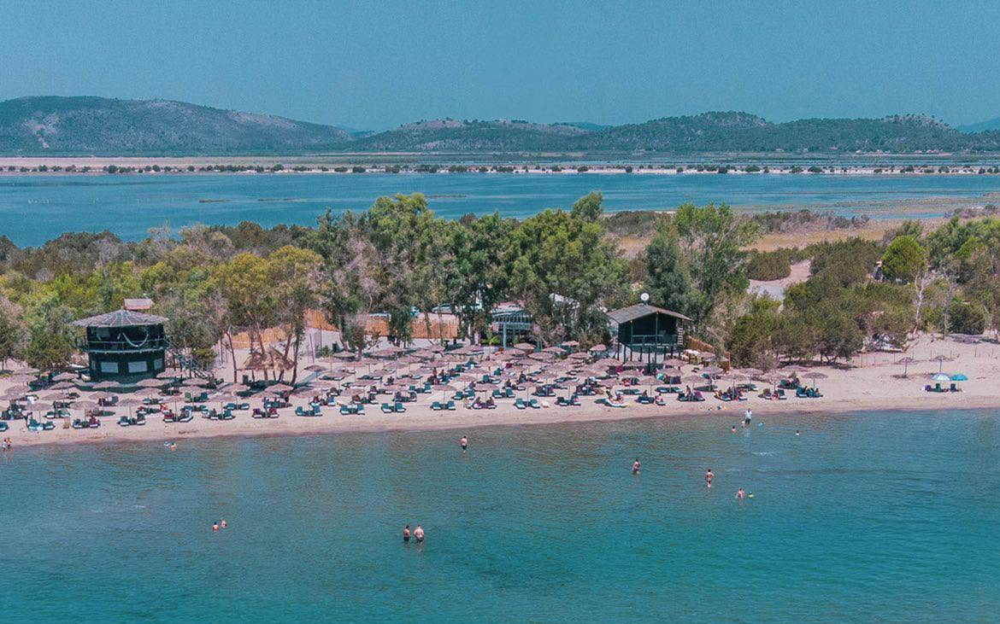
BeachThe locals' favourite spot for a swim. Ibiza Beach Bar has the music and drinks. Ask us for transport recommendations.
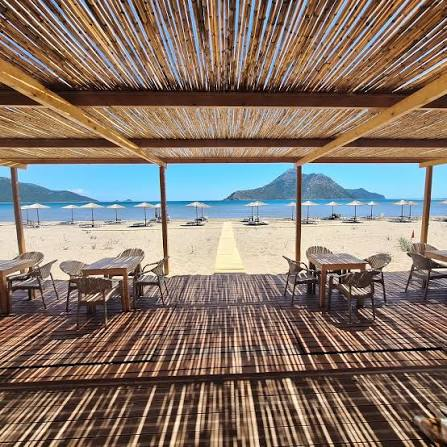
BeachRhys's favourite beach. A bit further out, but food and drink available too.
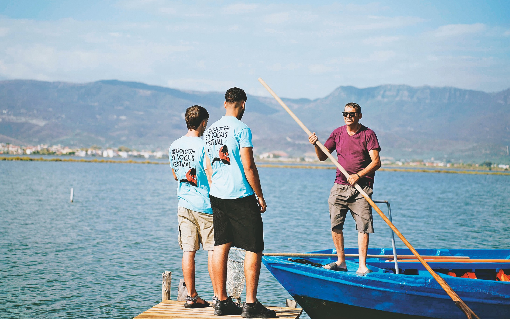
ActivitiesFor events, organised activities, and things to do in the local area, check out Messolonghi by Locals.
Founded by a family friend. Let us know if you'd like to arrange anything!
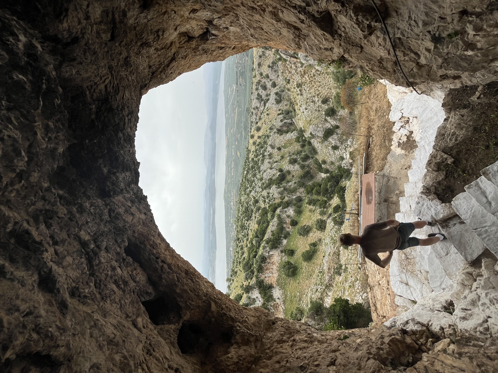
Walk & viewpointA walk up to a monk's old place of worship. Great views, a bit challenging to follow but unique. Ask us for the route!!
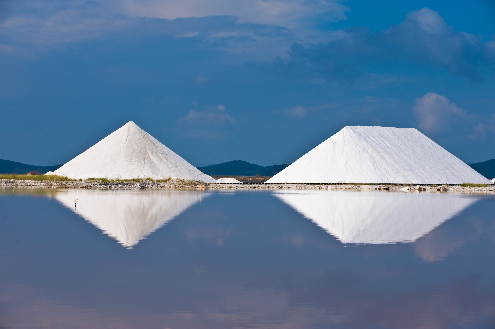
MuseumIf you find yourself down this way, have a look in. Heard it's worthwhile.
Sort your flights and a place to stay, and give yourself a few days either side to soak it all up.